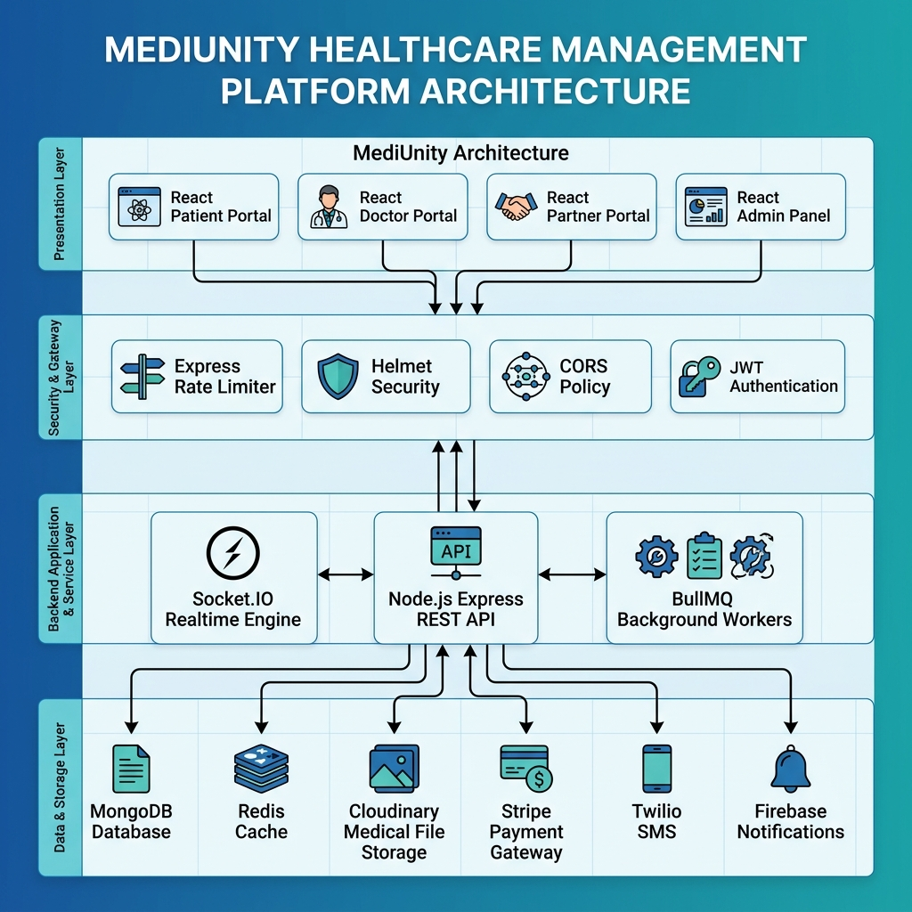
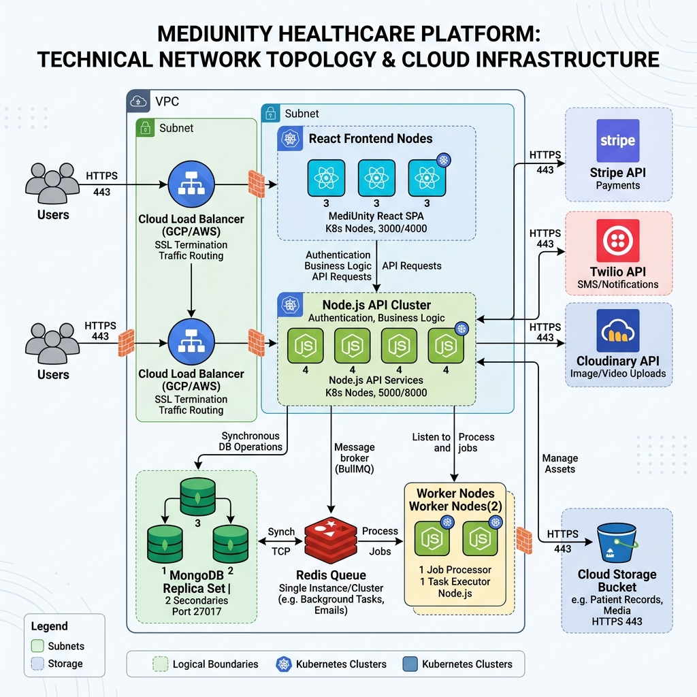
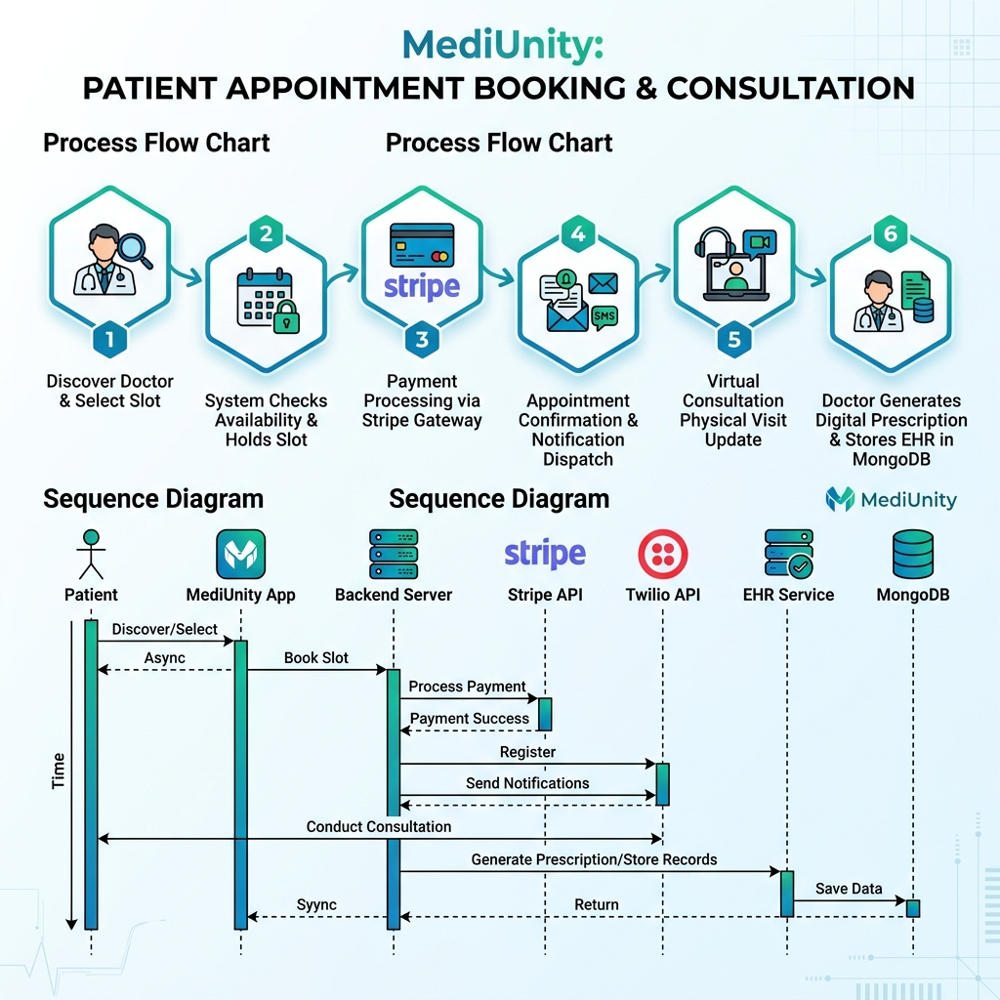
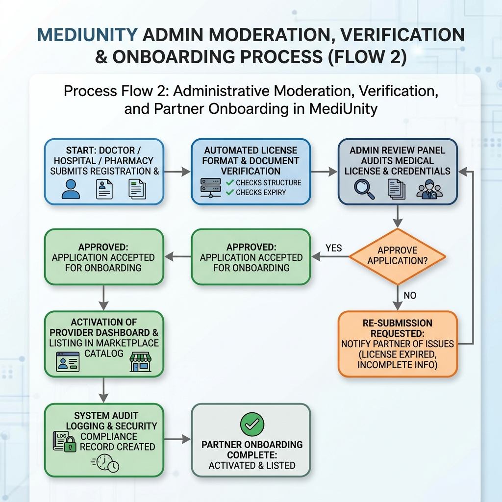
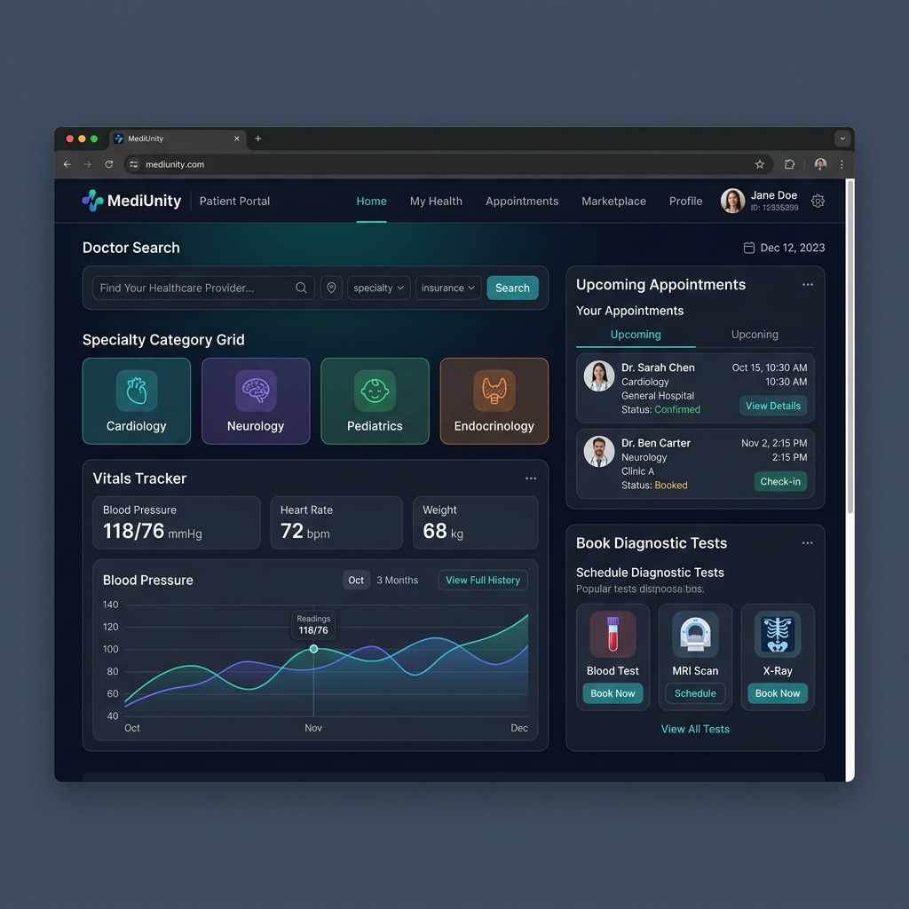
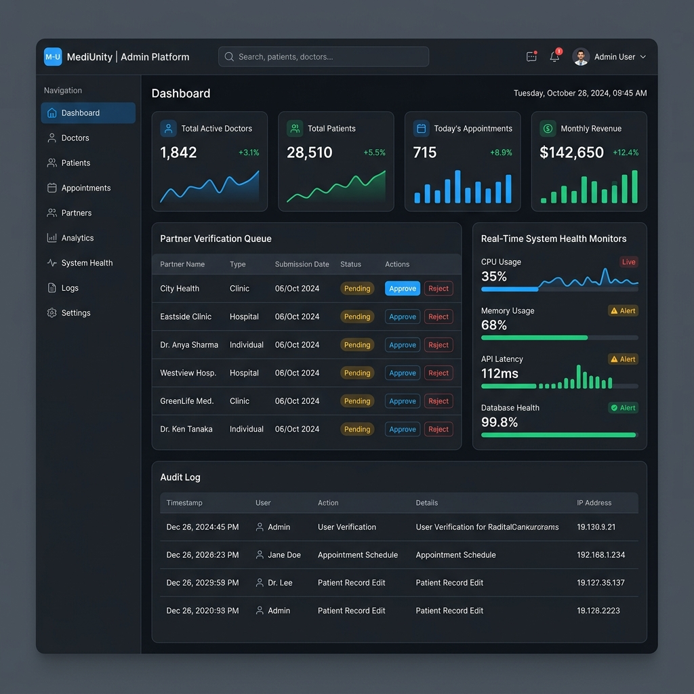

The project report titled "MediUnity: A Cloud-Ready Distributed Multi-Portal Healthcare and Wellness Platform", submitted by Sarower Rahman (ID: 111222033) and Joy Ranjanshil (ID: 111222007) of the 10th Batch (Fall 2022 – Spring 2026), has been examined and accepted as satisfactory in partial fulfillment of the requirements for the degree of Bachelor of Science in Computer Science and Engineering (CSE).
| Examiner Details & Signature | Board Role |
|---|---|
| Sabbir Ahmed Shihab Supervisor & Lecturer, Department of CSE CCN University of Science and Technology |
Chairman (Internal) |
| Head of Department Department of Computer Science and Engineering (CSE) CCN University of Science and Technology |
Member (Ex-Officio) |
| Internal Examiner Department of Computer Science and Engineering (CSE) CCN University of Science and Technology |
Member (Internal) |
| External Examiner Department of Computer Science and Engineering (CSE) Partner University / Industry Expert |
Member (External) |
We hereby declare that the work presented in this project report entitled "MediUnity: A Cloud-Ready Distributed Multi-Portal Healthcare and Wellness Platform" is an authentic record of our own research and development work carried out under the supervision of Sabbir Ahmed Shihab, Lecturer, Department of Computer Science and Engineering (CSE), CCN University of Science and Technology, Cumilla.
We confirm that:
First and foremost, we express our deepest gratitude to Almighty God for providing us with the health, strength, wisdom, and perseverance needed to successfully complete our undergraduate project and synthesize this comprehensive technical report.
We wish to extend our most sincere gratitude and profound appreciation to our esteemed project supervisor, Sabbir Ahmed Shihab, Lecturer, Department of Computer Science and Engineering (CSE), CCN University of Science and Technology. His invaluable guidance, constructive feedback, insightful critique, and continuous technical encouragement throughout the design and execution phases were fundamental to the realization of MediUnity.
We are also deeply thankful to the honorable Head of the Department of Computer Science and Engineering and all respected faculty members of CCN UST for providing a rigorous academic foundation, modern laboratory facilities, and an inspiring environment that fostered our technical growth.
Finally, we express our heartfelt appreciation to our families and fellow classmates of the CSE 10th Batch for their constant moral support, patience, and motivation during long hours of software development, testing, and documentation.
Modern healthcare delivery across global environments faces persistent challenges, including fragmented patient communication, manual appointment scheduling bottlenecks, delayed access to patient medical histories, isolated pharmacy inventories, and a lack of unified digital coordination between healthcare providers. To resolve these systemic inefficiencies, this project presents MediUnity—a cloud-ready, full-stack, multi-portal healthcare and wellness management platform engineered for global accessibility.
MediUnity unifies five critical healthcare stakeholders into a cohesive digital ecosystem: patients, medical doctors, hospitals, diagnostic centers, and licensed pharmacies, backed by an enterprise administrative control center. The platform architecture utilizes a modern JavaScript stack comprising React 19 and Vite for responsive presentation, Node.js with Express.js for RESTful API orchestration, MongoDB via Mongoose ODM for schemaless electronic health record storage, and Redis coupled with BullMQ for asynchronous background process queues. Real-time interaction—including instant doctor-patient messaging, emergency notification dispatches, and appointment queue updates—is driven by Socket.IO, while external cloud integrations facilitate secure media storage (Cloudinary), payment processing (Stripe), multi-channel alerts (Nodemailer, Twilio, Firebase Admin), and optical character recognition for prescriptions (Tesseract.js).
Key technical achievements of MediUnity include role-based multi-portal access control (RBAC), end-to-end appointment lifecycle tracking, integrated diagnostic test ordering, automated medicine delivery workflows, interactive patient vitals logging, automated doctor payout calculations, and multi-layered security middleware enforcing rate limiting, input sanitization, CORS protection, and HTTP header security via Helmet. Extensive testing and validation demonstrate high operational throughput, low latency, robust data protection, and seamless multi-device responsiveness. MediUnity serves as a scalable, production-ready foundation capable of expanding digital healthcare access worldwide.
Healthcare delivery in the modern era is undergoing a fundamental digital transformation driven by the rapid evolution of distributed web technologies, real-time messaging, mobile accessibility, and cloud computing. Traditional medical service management—characterized by paper-based recordkeeping, physical queue management, fragmented diagnostic laboratory reporting, manual pharmacy inventory checks, and isolated doctor consultations—is increasingly inadequate to meet global healthcare demands. Patients face severe delays in securing qualified medical consultations, accessing personal health records, and purchasing specialized pharmaceuticals. Concurrently, medical practitioners and health facility administrators suffer from operational inefficiencies, disconnected patient data silos, and administrative burdens.
To address these critical global healthcare challenges, this project introduces MediUnity (alternatively designated as the Medicare System)—an enterprise-grade, cloud-ready, multi-portal digital healthcare and wellness ecosystem. Built with a scalable multi-tenant architecture, MediUnity connects patients, medical clinicians, hospitals, diagnostic centers, and retail pharmacies into a single, unified digital platform. Designed for global operational deployment, MediUnity provides localized and worldwide reach, multilingual capabilities, internationalized health metric tracking, and compliant medical record management.
The primary objective of MediUnity is to engineer a unified digital healthcare ecosystem that eliminates geographical and structural barriers between healthcare consumers and medical providers. The specific core purposes of the system include:
The functional and technical scope of MediUnity spans multiple operational boundaries and software domains:
frontend & frontend-patient), Doctor Portal (frontend-doctor), Partner Provider Portal (frontend-partner), and Administrative Control Panel (admin).The remainder of this project report is structured into the following detailed chapters:
Digital health platforms have evolved significantly over the past two decades, transitioning from localized desktop electronic medical record (EMR) databases to cloud-native telemedicine marketplaces. This chapter reviews existing healthcare systems, outlines the key characteristics of MediUnity, details the primary technology stack, and lists the required software and hardware specifications.
MediUnity distinguishes itself from existing proprietary and legacy health management platforms through several core architectural characteristics:
frontend-patient, frontend-doctor, frontend-partner, admin) styled specifically for role-tailored user experience.render.yaml, environment templates), enabling horizontal autoscaling during peak demand.The technical stack powering MediUnity was selected for high performance, developer agility, robust community support, and enterprise cloud compatibility:
| Layer / Domain | Technology Stack | Role & Implementation Purpose |
|---|---|---|
| Frontend Client | React 19, Vite, Tailwind CSS, Lucide Icons, Axios | Responsive single-page applications for Patients, Doctors, Partners, and Admins with PWA capability. |
| Backend Server | Node.js, Express.js (v5), Socket.IO | RESTful API web server, real-time WebSocket messaging, and request routing. |
| Database & Caching | MongoDB, Mongoose ODM, Redis | Schemaless document store for EHR/users; Redis for queue management and session caching. |
| Async & Processing | BullMQ, Tesseract.js, Nodemailer, Twilio | Background queue workers, OCR prescription parsing, automated email dispatches, and SMS dispatches. |
| Cloud & Security | Cloudinary, Stripe, Helmet, Express-Rate-Limit | Cloud medical file storage, global payment processing, rate limiting, and HTTP security headers. |
The software tools and operational environment required to build, execute, and host MediUnity comprise:
The minimum and recommended hardware specifications for hosting and running MediUnity across development and cloud environments are outlined below:
| Component | Minimum Requirement (Dev/Test) | Recommended (Cloud Production) |
|---|---|---|
| Processor (CPU) | Dual-Core 2.0 GHz Intel/AMD or Apple M1 | 8-Core 3.0 GHz x86-64 / ARM Cloud Server Instance |
| System Memory (RAM) | 4 GB DDR4 RAM | 16 GB to 32 GB High-Speed RAM |
| Storage (Disk) | 10 GB available SSD space | 100 GB NVMe SSD with automated cloud backups |
| Network Bandwidth | 10 Mbps broadband internet connection | 1 Gbps dedicated cloud network interface with DDoS mitigation |
This chapter details the system engineering methodology, architectural layout, network deployment topology, and core process flow diagrams that govern MediUnity's operations.
MediUnity follows a decoupled multi-tier architecture structured across four distinct operational layers: Presentation, Security Gateway, Application Services, and Data/Storage Layer. Figure 3.1 illustrates this layered structure.

To demonstrate production readiness, MediUnity's infrastructure was modeled as a distributed cloud container deployment. Figure 3.2 depicts the simulated network topology.

Process Flow 1 (Figure 3.3) illustrates the end-to-end sequence executed when a patient searches for a doctor, schedules an appointment, processes payment, and conducts a consultation:

Process Flow 2 (Figure 3.4) outlines the administrative compliance, verification, and onboarding process required before doctors, hospitals, diagnostic centers, or pharmacies can operate on the platform:

This chapter presents the concrete implementation outcomes of MediUnity, highlighting the interactive user application interfaces and administrative operational management tools.
The end-user experience encompasses the patient, doctor, and partner provider portals, designed with responsive layouts, dark/light theme options, and intuitive healthcare navigation workflows. Figure 4.1 showcases the patient and end-user interface layout.

The Administrative Control Panel (admin) equips platform moderators and enterprise operations teams with complete oversight of platform health, security, compliance, and user verification. Figure 4.2 illustrates the Admin Part operational dashboard.

This final chapter synthesizes the overall project outcomes, lists the key architectural advantages of MediUnity, discusses discovered system limitations, and outlines prospective future research and feature enhancements.
MediUnity offers significant technological and operational benefits over traditional and siloed healthcare software solutions:
frontend-patient, frontend-doctor, frontend-partner, admin), reducing cognitive load and operational friction.Despite its robust architecture, several system constraints and operational challenges were identified during development and testing:
frontend-patient, frontend-doctor, frontend-partner, admin) requires synchronized UI library updates and strict state synchronization.Future development iterations of MediUnity will expand its technological capabilities in the following directions: